Looking back over the past six months of blog content, it seems a bit too serious and heavy. Recently, I’ve had a lot of meals and started to get a general idea of dining costs.
According to Beijing’s consumption level, an average of 180 RMB per person can get you a decent Chinese meal. If it’s below ¥180, it might seem a bit shabby. Even if you can just get full, the girl sitting across from you might not be satisfied. The best state is when there are still half a plate of food left after you’re full, and you can chat for a while and still have a few more bites.
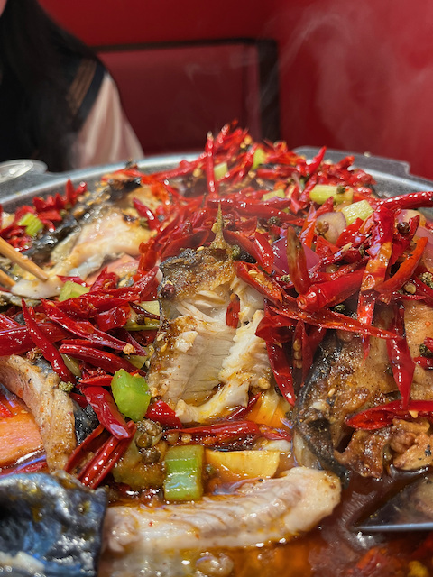This is a spicy grilled fish I had a few days ago at Wangjing Kaide MALL, at a place called Nanluo Feimao. It was delicious. The fish was tender, with few bones, slightly spicy, just the right level of heat. The photo turned out bright and colorful. The pot had some additional ingredients, like luncheon meat, yuba, and fried dough sticks, averaging ¥180 per person.
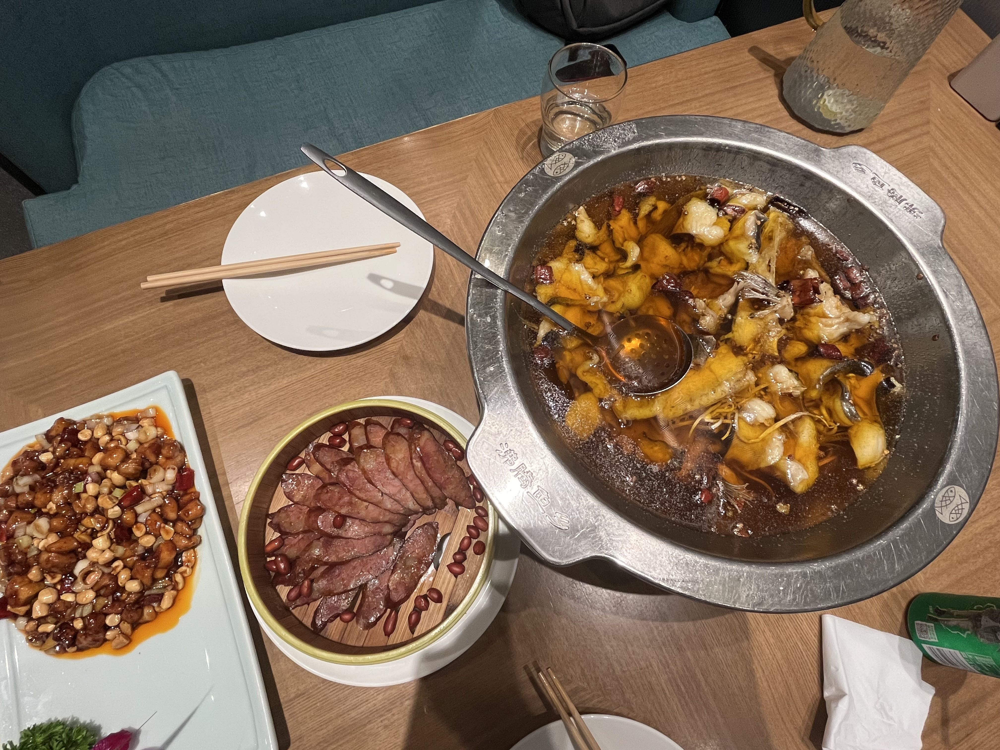This is from a grilled fish place at Blue Harbor. I’m not sure if this counts as grilled fish since it’s soaked in soup. The fish wasn’t tasty, not as good as spicy grilled fish, but it was boneless. The sausage in the middle was something I insisted on ordering, but it all got left over. It wasn’t bad, just couldn’t eat any more. This meal averaged ¥300 per person, quite expensive, but a lot was wasted. We didn’t think to pack it up at the time.
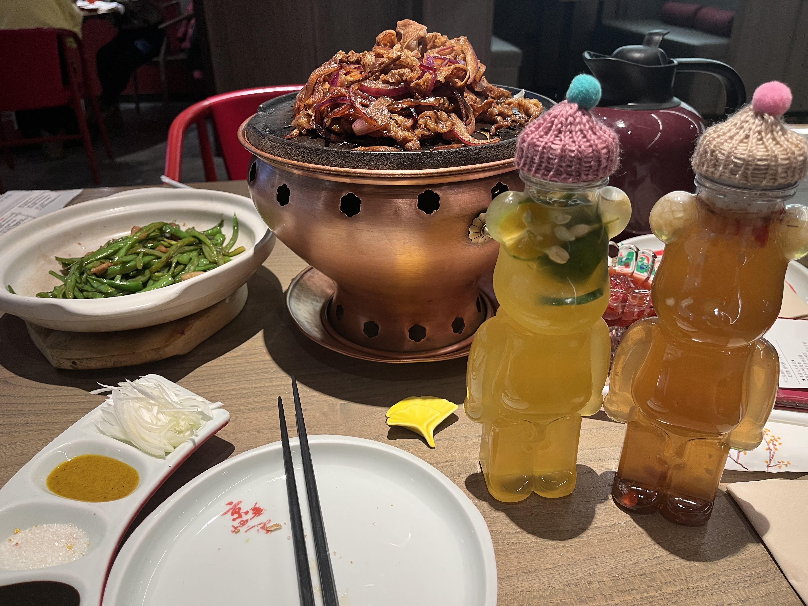Beijing roast duck is a famous local dish, a classic. This was at Jinghua Yunyan in Hopson One, a slightly down-to-earth place with close square tables. Prices are moderate to low for a roast duck restaurant. The sweet shrimp wasn’t very good, but the drink cups were very cute. It was winter at the time, and the cups had little hats, which could be taken home as souvenirs. You can get full with ¥140 per person; if you order a couple more dishes, it’s ¥180 per person.
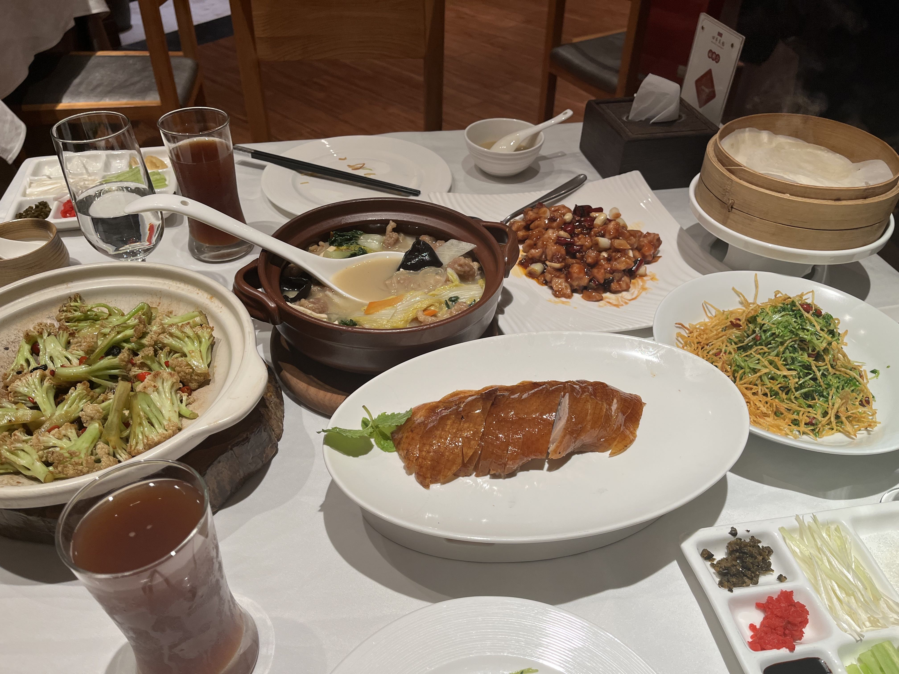This is at Siji Minfu Roast Duck Restaurant in Wangjing, a very popular chain where you almost always have to wait for over 40 minutes during meal times. The roast duck here is definitely tasty, but I think the best part is the meat soup, especially the soup, which is very delicious. The dishes initially have a strange smell that might be off-putting, but after a couple of sips, you start to like it. The cold dish, which I’m not sure what it’s mixed with, is very fine and cool, with a great texture. I don’t remember much about the roast duck, just that there were many dishes and we couldn’t finish them. The average cost per person was under ¥200.
Xiaoda Dong is also a well-known chain with many branches in various commercial districts. There’s one on the third floor of Sanlitun Taikoo Li. The braised pork is really satisfying, a must for meat lovers. Xiaoda Dong’s Kung Pao Chicken is also better than Siji Minfu’s, very flavorful. It also costs under ¥200 per person, with many dishes you can’t finish, leaving you very full. Unfortunately, I forgot to take pictures.
The more expensive roast duck restaurant is Ti Du, where I had a company dinner. The environment is very elegant, and the dishes are quite sophisticated. I haven’t dined there alone, but I estimate it costs at least ¥300 per person.
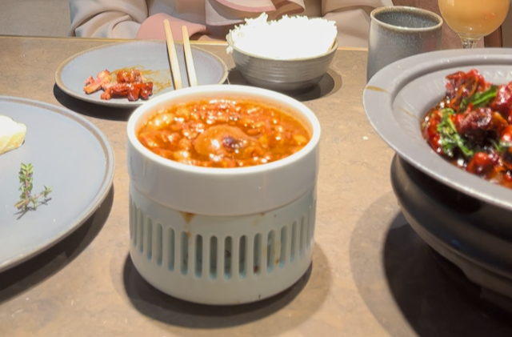This is from a Taiwanese restaurant called Taixiangli in Wudaokou Shopping Center. The three-cup chicken is the signature dish with a heavy sauce flavor. The grilled meat rice bowl is also worth trying, very filling. However, the crab roe bun was mediocre, a bit bland, possibly because the three-cup chicken’s strong flavor overpowered it. The average cost was around ¥170 per person.
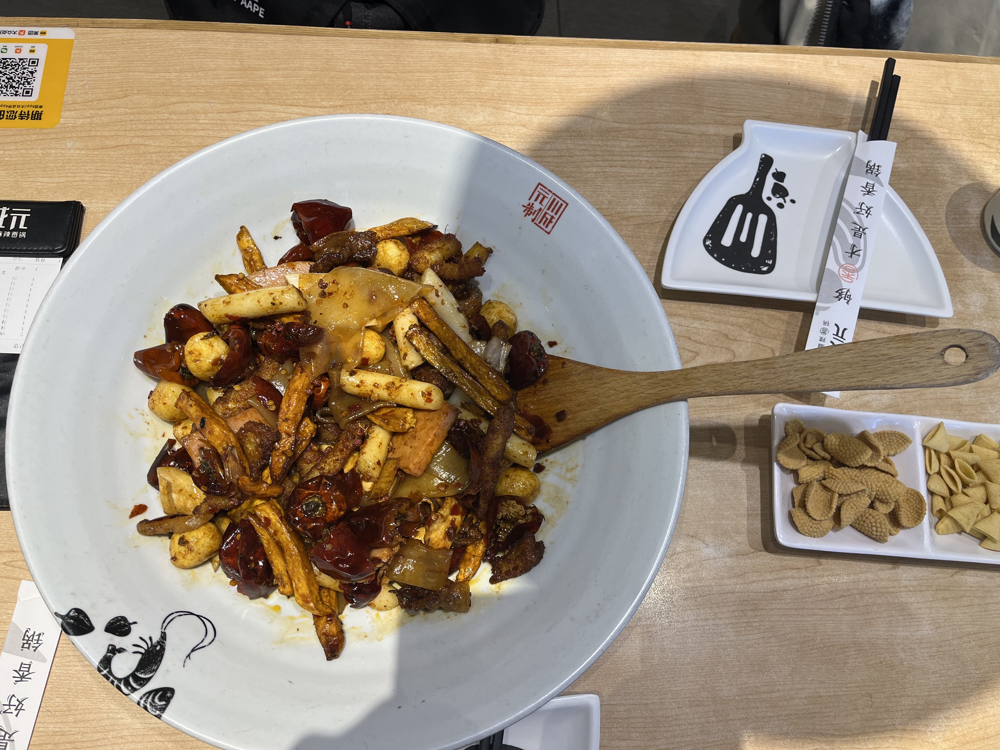This is a spicy hot pot, cheap and delicious. The price of hot pot is similar; Haidilao costs around ¥150 per person, enough to get full, with leftovers.
For a more upscale environment, you have to go for Western cuisine. The atmosphere is better, with larger table distances and flower vases on the tables. It’s also more expensive than Chinese cuisine. Cheaper Western meals cost around ¥250 per person, while pricier ones go up to ¥500 per person. I haven’t had anything more expensive.
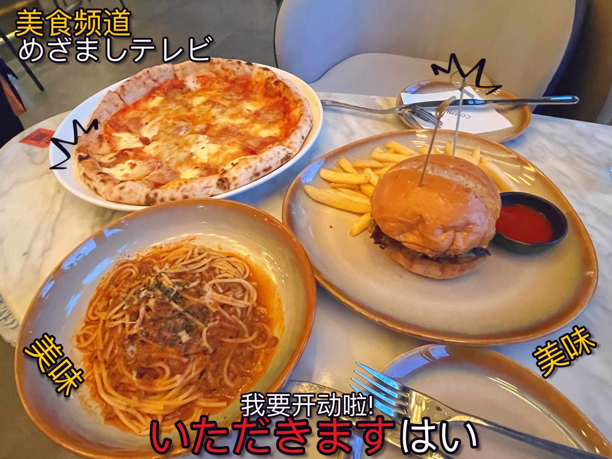At a Western restaurant in Sanlitun, I didn’t have time for steak, so I ordered pizza and pasta, finished all the dishes in 10 minutes. I remember the pasta here being the best I’ve ever had, but when I went back, the pasta, pizza, and burgers were all different. The ingredients and plates had changed, and the taste wasn’t the same. By the way, why do Western restaurants have Japanese slogans? 😂
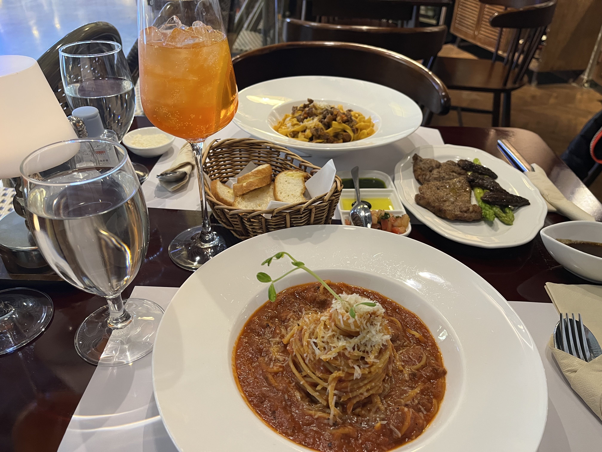This is a small place in a small mall in Wangjing, on the -1 floor. The photo by the window turned out nice. It was a casual dinner, averaging ¥250 per person.
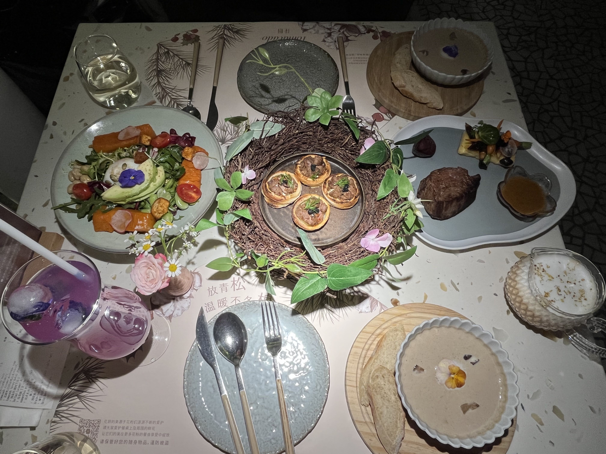 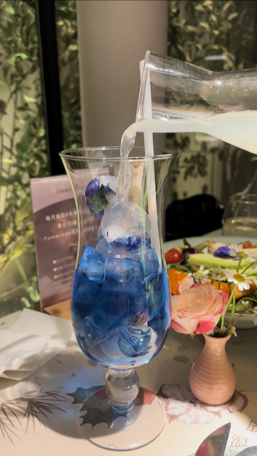This is the famous Flower Restaurant, with a great environment and beautiful dishes. The second photo is a blue butterfly cocktail, which changes color from blue to pink when you pour in the liquor, quite fun. The average cost was under ¥300 per person.
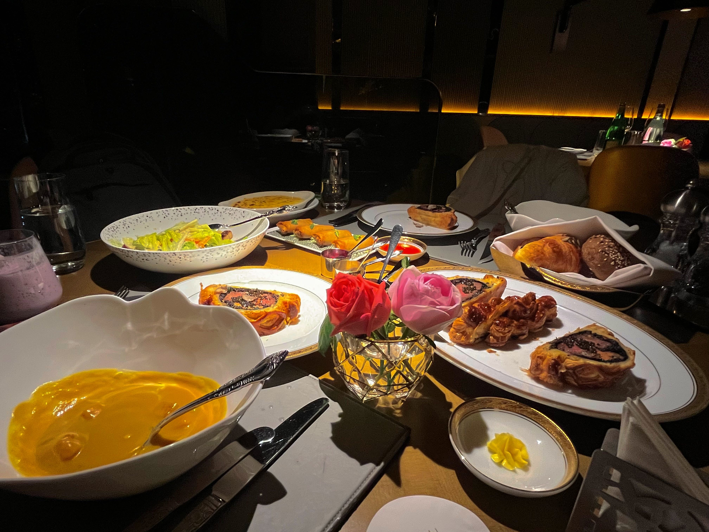This is the most expensive Western meal I’ve had, at Steak House. The Wellington steak set was very tender and delicious. The average cost was ¥500 per person.
For Korean cuisine, you can try the simplest bibimbap, available in various mall fast-food joints, costing ¥50 per person. Or you can try army stew, with Shin Ramyun being the best, and it’s not expensive. You can also buy a few packs of Shin Ramyun for ¥5 each to try at home.
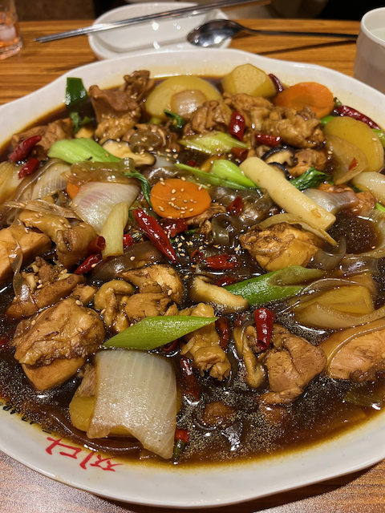This is from a place in Wangjing called Yuan Mama’s Andong Chicken, in a shopping district. The chicken is Korean-style, with a slightly spicy flavor. The place is small and looks like home cooking, but the chicken is quite delicious. The soup looks heavy but is drinkable, and I really like the taste. Especially pouring the soup over rice to make a mixed rice dish. The average cost was ¥120 per person.
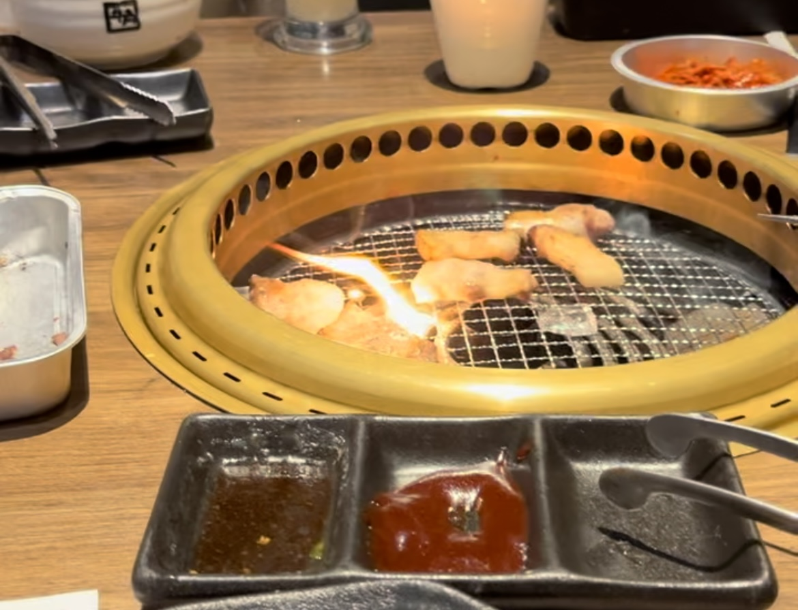A more substantial dish is Korean BBQ. Pork belly is the best, must order two servings, along with beef brisket and seaweed rice. But be careful not to let the BBQ catch fire; once, we used a wire mesh to grill the beef brisket, and it caught fire, burning all the meat.
Mexican food is inexpensive and surprisingly delicious. The meat looks dark but isn’t burnt, with a layer of sauce on top. Mexican dishes are typically wrapped in tortillas. There are small cards on the table explaining how to eat them: lift your hand, hold the tortilla, keep your forearm parallel to the table, and tilt your head 45 degrees. It’s quite a particular way of eating. Of course, if you really eat like that, it might look weird.
Japanese cuisine prices are similar to Western cuisine, with many raw dishes like sashimi. I don’t eat it often, but sukiyaki is a common dish, along with various small grilled skewers. However, Japanese restaurants seem to have small and cramped spaces. There’s a place in Beijing, I forgot the name, where you can wear kimonos and take Japanese-style photos at the entrance, but the clothes aren’t new, the food is mediocre, expensive, and the portions are small, mainly for photo ops.
If you didn’t have lunch, you’d need to have afternoon tea around two or three in the afternoon. Although it’s just desserts, serving as a snack, the price isn’t cheap. Dessert prices vary, depending on the style of the dessert shop. There are basically two types. Fast-food-style dessert shops cost ¥80 per person, with each person having a cake and a drink, and maybe another cake or ice cream. The other type is internet-famous dessert shops, luxuriously decorated, designed for girls to take pictures, costing ¥180 per person.
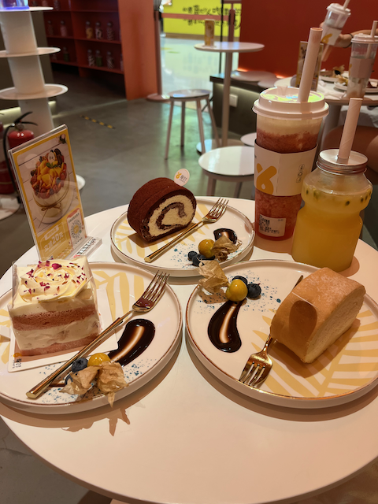This is a fast-food-style dessert